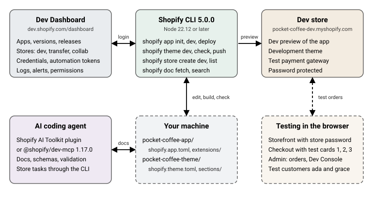

Development Environment
|
This content was generated with the assistance of AI and should be verified against the official documentation before being relied on in production. |
This page was written against Shopify CLI 5.0.0 (published 2026-10-27, requires Node.js 22.12 or later), the Admin and
Storefront API version 2026-10 (the latest stable version, with 2027-01 as the release candidate), and
@shopify/dev-mcp 1.17.0, and it was checked on 2026-10-27. It explains the tools a Shopify developer uses every day
before writing any theme, app or extension code: the Dev Dashboard, the command line, dev stores, test payments, and
the AI tooling that Shopify ships for coding agents. Dev stores can be created on any plan (Basic, Grow, Advanced or
Plus), so everything here applies to merchants on any plan and to Shopify Plus alike.
The running example is Pocket Coffee, a small specialty-coffee shop with one configurable product (Single-origin
beans, 18 variants such as PC-ETH-WHL-250), a Starter kit, a Coffee Club customer segment, and two test customers
(ada@example.test and grace@example.test). In this page it lives in a dev store called
pocket-coffee-dev.myshopify.com and in two local projects, pocket-coffee-app and pocket-coffee-theme. Later pages
of this subsection build the theme, the apps and the extensions that run inside this environment.
Some commands only work with a Shopify identity (creating a store, scaffolding an app, previewing a theme). Those are documented from the official references and from the help output of CLI 5.0.0, and they were not executed here. The commands that work without a login (version and help output, Theme Check, offline app builds, GraphQL schema validation, workflow syntax checks) were run on 2026-10-27, and the output shown for them is real. The section What was run and what was not lists both groups.
The pieces and how they fit
Four things make up the environment, and a fifth (the AI tooling) plugs into them.

| Piece | What it is for | Where it lives |
|---|---|---|
Dev Dashboard |
Apps and their versions, client credentials, automation tokens, logs, alerts, stores, catalogs, organization roles. |
Browser, https://dev.shopify.com/dashboard/ |
Shopify CLI |
Scaffolds apps, themes and extensions, serves a live preview on a dev store, deploys versions, creates and deletes dev stores, runs Theme Check, queries the Admin API, fetches documentation. |
|
Dev store |
A free, password-protected Shopify store you own, used to build and test with realistic admin, checkout and APIs. |
|
Local project |
The source of truth: |
Your repository |
AI tooling |
Gives a coding agent the current Shopify documentation, API schemas and validators (Dev MCP server, AI Toolkit plugin and skills). |
Your agent’s configuration |
A typical loop is: change a file locally, let the CLI sync it to the dev store (shopify app dev or shopify theme dev),
look at the result in the browser, place a test order with the Test payment gateway, and read the logs in the Dev
Dashboard. Releases to merchants are a separate step (shopify app deploy, shopify theme push), covered in later
pages.
Requirements and installing Shopify CLI
Shopify CLI is a Node.js program. The official requirements on 2026-10-27 are:
| Requirement | Value |
|---|---|
Node.js |
22.12 or later (the |
Package manager |
npm, Yarn 1.x or pnpm |
Git |
2.28.0 or later according to the installation page; CLI 5.0.0 additionally requires 2.38.0 or later for operations that
use Git, such as |
Browser |
Current Chrome or Firefox for the interactive login and the app preview |
Install the CLI globally with any of the package managers, or with Homebrew on macOS.
# npm
npm install -g @shopify/cli@latest
# Yarn 1.x
yarn global add @shopify/cli@latest
# pnpm
pnpm install -g @shopify/cli@latest
# macOS only, Homebrew
brew tap shopify/shopify
brew install shopify-cliA global install is the recommended default because one install serves apps, themes and Hydrogen storefronts. Teams
that need the same CLI version on every machine add @shopify/cli as a development dependency instead and call it
through the package manager (npm run shopify app dev). Since version 3.59.0 the separate @shopify/app package is
bundled in @shopify/cli, so it no longer needs to be installed.
# local dependency, pinned by the lockfile
npm install -D @shopify/cli
npm run shopify app generate extensionCheck the installed version and the available topics. The output below was produced with the 5.0.0 binary installed from npm into a scratch project.
$ shopify version
5.0.0
$ shopify --help
A CLI tool to build for the Shopify platform
VERSION
@shopify/cli/5.0.0 darwin-arm64 node-v24.21.0
USAGE
$ shopify [COMMAND]
TOPICS
app Build Shopify apps.
auth Auth operations.
config CLI configuration options.
doc Search and fetch documentation from shopify.dev.
hydrogen Build Hydrogen storefronts.
organization List Shopify organizations you have access to.
store Work directly with Shopify stores.
theme Build Liquid themes.
upgrade Upgrades Shopify CLI.
COMMANDS
commands List all shopify commands.
help Display help for Shopify CLI
search Search shopify.dev for the most relevant content matching a query.
upgrade Upgrades Shopify CLI.
version Shopify CLI version currently installed.Source: Shopify CLI reference
Versions, upgrades and telemetry
Shopify CLI follows semantic versioning since 4.0.0 (2026-05-21). Version 5.0.0 (2026-10-27) is a major release because
it types the JSON output of every command: scripts that parse --json output must be updated, and
shopify <command> --json-schema prints the result, error and event schemas of any command.
| Version | Date | What changed for the environment |
|---|---|---|
4.0.0 |
2026-05-21 |
Semantic versioning and automatic upgrades introduced. Removed: the |
4.5.0 |
2026-07-13 |
|
4.8.0 |
2026-09-09 |
|
4.9.0 |
2026-10-08 |
Typed JSON output for |
5.0.0 |
2026-10-27 |
Typed JSON output across all commands (read |
Since 4.0 the CLI upgrades itself with the package manager that installed it. It does not upgrade in CI, in project-local installs, or when the next release changes the major version. These commands control it.
shopify upgrade # upgrade now
shopify config autoupgrade status # enabled, disabled or not yet configured
shopify config autoupgrade off # stop automatic upgrades (a daily reminder is shown instead)
shopify config autoupgrade onThe CLI collects usage data by default, including the commands and flags you run, timings, errors, and identifiers
such as your Shopify account ID, app client ID and store domain. Opt out with the environment variable
SHOPIFY_CLI_NO_ANALYTICS=1 or OPT_OUT_INSTRUMENTATION=true. The runs on this page used
SHOPIFY_CLI_NO_ANALYTICS=1 and CI=1, which also disables prompts and automatic upgrades.
Scripted and non-interactive use
Every command accepts the same cross-cutting flags, and each flag has an environment-variable twin named
SHOPIFY_FLAG_<NAME>, which is how CI systems pass them.
| Flag | Environment variable | Meaning |
|---|---|---|
|
|
Disable interactive prompts and browser authentication. Missing required values become errors. |
|
|
Print the result as JSON and disable color. |
|
|
Print the JSON Schema of the command’s result, error and event objects. |
|
|
Disable color output. |
|
|
More output. It may include sensitive data, so do not paste it into tickets. |
|
|
The Shopify account (session) to use when several are logged in. |
|
|
The project directory the command runs in. |
Source: Shopify CLI reference (flags read from the --help output of CLI 5.0.0)
Without a login, a command that needs one stops instead of opening a browser when prompts are disabled. This is the
real output of shopify app init --no-input --name pocket-coffee-app --organization-id 1 --template reactRouter
--flavor typescript in a logged-out environment. Nothing was created.
To run this command, log in to Shopify.
╭─ error ──────────────────────────────────────────────────────────────────────╮
│ │
│ Authorization is required to continue, but the current environment does │
│ not support interactive prompts. │
│ │
│ To resolve this, specify credentials in your environment, or run the │
│ command in an interactive environment such as your local terminal. │
│ │
╰──────────────────────────────────────────────────────────────────────────────╯Source: shopify app init
The Dev Dashboard
The Dev Dashboard (https://dev.shopify.com/dashboard/) is the home of everything you build on Shopify. Whether an app was created with the CLI or in the browser, it appears in one list there, together with every store your organization can reach. The dashboard was relaunched on 2026-09-25. The Partner Dashboard is still used for App Store submission and quality checks, and new CLI tokens are no longer created there.
What lives in the Dev Dashboard
| Area | What you do there |
|---|---|
Home |
A portfolio summary of up to five rows, flagged apps and stores first, ranked by severity, plus revenue after revenue share, fees, refunds and chargebacks. It needs app development access. |
Apps |
One list for all apps. Create an app, open its Overview (operations, admin performance, growth), Versions, Logs and App settings. Install counts include your own dev stores. |
Stores |
Every store your organization can reach, filterable by type: dev stores, client transfer stores and collaborations. Create and delete dev stores, request collaborator access to a merchant store. |
Catalogs |
Saved, filtered views of the Global Catalog for AI agents. |
App settings |
Settings that exist only in the dashboard, outside |
Source: Dev Dashboard
Organizations and roles
Access is role based. Partner organizations get system roles, and merchant organizations can assign the App developer role. Custom roles with the permissions "Create and manage dev stores" and "Build and manage apps" exist on Shopify Plus.
| Role | Access |
|---|---|
Organization administrator |
Everything in the organization and all stores. |
App developer |
Develop and manage apps, create and manage dev stores. No production store data, financials or user management. |
Store administrator |
Full access to store resources in the organization, including dev stores and client transfer stores. |
Collaborator access |
Log in to assigned collaborator stores. Store-level permissions are set by the merchant. |
The dashboard opens on Home if you have app development access, on Stores if you only have store permissions, and on a
page reading "Your account doesn’t have developer access yet" if you have neither. In that case ask the organization
owner for one of the roles above. The numeric organization ID that several CLI commands need is the last segment of
the dashboard URL (https://dev.shopify.com/dashboard/<organization-id>;), and shopify organization list prints it.
Source: Dev Dashboard user permissions
Creating an app in the dashboard
The CLI is the recommended path for feature-rich apps with extensions. The dashboard path is best for automation and API-only apps with no user interface in the Shopify admin, for example a nightly job that reads Pocket Coffee orders into an accounting system. The steps are:
-
In Apps, select Create app, then Start from Dev Dashboard, name the app and select Create.
-
Create a version. A version is a snapshot of the app’s configuration, URLs and settings, and an app needs at least one before it can be installed. Fill in the App URL (use
https://shopify.dev/apps/default-app-homewhen the app is not embedded), the Webhooks API version (normally the newest) and the Scopes, then select Release. Access to protected customer data needs approval, and a new version that adds scopes is not applied automatically to installed stores: merchants must approve the new scopes. -
Select Install app. The link opens the OAuth flow in a new tab, where you pick or create the store and select Install.
-
Authenticate. For a store inside your own organization use the client credentials grant: copy the client ID and client secret from App settings and request a token from Shopify’s OAuth endpoint. The token expires after 24 hours, so request a new one when needed. Apps built with the CLI get authentication handled automatically.
The client secret is a credential. Keep it in a secret manager and reference it from code through an environment
variable such as ${SHOPIFY_CLIENT_SECRET}; never commit it. The authentication page of this subsection explains
the token flows in depth.
App Automation Tokens
An App Automation Token authenticates the CLI in non-interactive environments, so a pipeline can run
shopify app deploy. Each token is scoped to the one app where it was created and cannot touch other apps.
-
Open the app, go to App settings, and in App Automation Token select Create token.
-
Choose an expiration of 1, 3 or 6 months and select Generate token.
-
Copy the value immediately; it is shown only once. Store it as a secret in the CI system.
To rotate, select Rotate (old and new tokens are both valid until you revoke the old one), update the CI secret, then
revoke the old token. Tokens created before in the Partner Dashboard (variable SHOPIFY_CLI_PARTNERS_TOKEN) keep working
until they expire, but new ones are created in the Dev Dashboard and use SHOPIFY_APP_AUTOMATION_TOKEN.
export SHOPIFY_APP_AUTOMATION_TOKEN=<your-automation-token>
shopify app deploy --config production --allow-updatesSource: Manage App Automation Tokens
Logs, metrics and alerts
Shopify measures every app without instrumentation. An app’s Overview has three cards: Operations (GraphQL and REST error rates, webhook delivery failures and Function runs, each plotted against volume), Admin performance (Largest Contentful Paint, Interaction to Next Paint and Cumulative Layout Shift measured in the merchant’s browser) and Growth (revenue, install and uninstall events). Logs puts API requests, webhook deliveries, Function runs, UI extension errors and your own app events on one timeline.
| Fact | Value |
|---|---|
Log retention |
30 days; one filtered range can span at most 7 days. |
Filters |
Time range, type (webhook, Function, app event, app billing event, GraphQL request, REST request), shop, status and status code, plus type-specific dimensions such as topic or Function ID. |
Webhook failures alert |
More than 0.5% of deliveries failing across at least 500 deliveries in 24 hours. Persistent failures lead Shopify to remove the subscription. |
Other alert statuses |
Delisted, suspended, Built for Shopify revoked, suspended or at risk, function errors, outdated extension API version, deprecated API calls, deprecated offline token (approaching or past the deadline). |
During development, the Logs view is the fastest way to answer "what did my app do for this shop?" when a test order misbehaves.
Source: Monitor app performance
Dev stores
A dev store is a free, full-featured Shopify store that you own, used to build and test apps, themes and storefronts without touching a live store. Your organization works with three kinds of store, and the choice depends on who owns the store when the work is finished.
| Dev store | Client transfer store | Collaboration | |
|---|---|---|---|
Owner |
You (your organization) |
You while building, the merchant after the transfer |
The merchant |
Primary use |
App and theme development and testing |
Building a store to hand over to a client |
Working on a merchant’s live store |
Transferable to a merchant |
No |
Yes |
Not applicable |
Real transactions |
No |
No |
Yes |
Custom or draft apps |
Can install them |
Cannot |
Depends on the merchant’s permissions |
Source: About stores
Creating a dev store with the CLI
shopify store create dev (CLI 4.8.0 and later) creates a dev store in your organization. It prompts for missing
values, or takes them as flags. In a non-interactive run --name, --plan and --organization-id (unless you belong
to a single organization) are required.
| Flag | Meaning | Environment variable |
|---|---|---|
|
Store name. It identifies the store and builds the |
|
|
The Shopify plan of the dev store. |
|
|
Populate the store with Shopify’s generated test data. |
|
|
Enable one feature preview (for example |
|
|
Two-letter ISO 3166-1 alpha-2 country code, such as US, CA or GB. |
|
|
Numeric organization ID; auto-selected if you belong to one organization. |
|
|
Machine-readable output and non-interactive mode. |
|
For Pocket Coffee a Basic-plan store with demo data is enough to start, in Spain:
shopify store create dev \
--name "pocket-coffee-dev" \
--plan basic \
--demo-data \
--country ES \
--jsonSource: Dev stores
With --json the command prints an object with a store (name, domain, adminUrl, plan, featurePreview,
country and demoData, with name, domain, plan and demoData always present) and an organization (id and
name). Failures use a StoreCommandError object with error, message, nextSteps and exitCode, and progress
events stream as diagnostic or progress objects. These field names come from the schema printed by
shopify store create dev --json-schema, which runs without a login:
shopify store create dev --json-schemaSource: shopify store create dev
The themes documentation still spells the demo-data flag --with-demo-data. The help output of CLI 5.0.0 lists
--demo-data, so use that spelling.
Creating a dev store in the dashboard
-
Open Stores in the Dev Dashboard, select Create store and choose Dev.
-
Enter a name; it becomes the
myshopify.comURL and cannot be changed afterwards. -
Choose a plan: Basic (core features), Grow (more reporting and staff accounts), Advanced (advanced reporting, lower transaction fees, third-party calculated shipping rates) or Plus (Shopify Flow, Launchpad and other enterprise features).
-
Optionally enable generated test data and, if you want to test unreleased capabilities, a feature preview.
-
Select Create store and log in.
The store setup flow completes in the Shopify admin, and the store then appears in the dashboard’s Stores list.
Source: Dev stores
Preview stores
shopify store create preview (CLI 4.5.0 and later) is documented as creating a Shopify store without requiring an
existing account (flags --name and --country). It was not run for this page because it creates an
account-bound store.
Source: shopify store create preview
Ownership, access and limits
-
The creator is the store owner. Other developers must be added as staff members, and the CLI and Dev Dashboard show the dev stores you have access to.
-
An organization can hold at most 250 dev stores (a higher limit applies to some larger existing organizations). The limit appeared in the documentation in September 2026, so clean up unused stores.
-
A dev store can hold unlimited products and test orders, up to 10 custom apps, and can have a custom domain assigned, except while a feature preview is enabled, because a store with a feature preview has no access to domains.
-
Dev stores are always password protected. You cannot remove the password page or replace it with a custom one. The theme’s customizable password page is a separate page and does not control access. Set the visitor password in Online Store > Preferences > Password protection, and never reuse an admin password.
-
Dev stores cannot process real transactions, cannot be converted to production stores and cannot be transferred. Build a store for a merchant as a client transfer store.
-
The
myshopify.comURL cannot be changed; create a new store instead. -
A dev store can serve as a demo store in a Shopify App Store listing, but not in a Theme Store listing (use a client transfer store there).
-
For apps that use Shopify App Pricing, you can select any plan at no charge for apps owned by your organization. For apps that use manual pricing (the Billing API), use a Billing API test charge.
Source: Dev stores for themes
Generated test data and feature previews
--demo-data (or Generate test data for store in the dashboard) fills a new store with Shopify’s generated data. It
is snowboard themed, so it does not contain Pocket Coffee products, and it is meant to give apps, themes and storefronts
common cases to work with: products with all fields populated, hidden, archived, draft and out-of-stock products,
multi-location inventory, selling plans (preorder, prepaid, subscription, try before you buy), gift cards, customers,
two B2B companies (including some Plus-only features), locations, orders in many states, a fulfillment service, and
the Bogus payment gateway enabled for test orders. Create the Pocket Coffee catalog (beans, grinds, sizes and the
Starter kit) yourself in the admin or through the API, and keep the generated products to cross-check behavior.
Feature previews give early access to changes, usually backwards-incompatible API changes, before they reach all stores. Only one preview can be enabled per dev store, and it must be chosen when the store is created.
| Name | Handle | What it enables |
|---|---|---|
Increased variants |
|
Raises the number of variants per product. Themes that assume a complete variant list need updating first. |
Liquid July 2026 changes |
|
Adds the |
Market-driven shipping |
|
Moves shipping configuration into Markets. |
Physical inventory |
|
Adds bins, counts and purchase orders to the unstable GraphQL Admin API. |
Ship and pickup in one order |
|
Lets a buyer ship some items and pick up others in one order (Plus merchants). |
Shopify admin’s new design |
|
Applies the new admin design so you can check how your app’s App Home surfaces look. |
For backwards-incompatible changes the preview window is nine months, which is the time between a stable API version introducing the change and that version becoming the oldest supported one.
Source: Generated test data; Feature previews
Listing and deleting dev stores
shopify store list # stores in your organization
shopify store list --type dev --json # types: dev, production, client-transfer, collaborator
shopify store info --store pocket-coffee-dev.myshopify.com
shopify store open --store pocket-coffee-dev.myshopify.com
shopify store delete --store pocket-coffee-dev.myshopify.comDeleting a dev store is permanent: the store and its data are purged and cannot be restored. shopify store list returns
at most 250 stores, newest first, so on a large organization always filter with --type dev. The official example below
removes every dev store created more than two years ago and uses jq to filter the JSON; --force skips the
confirmation that is otherwise required.
shopify store list --type dev --json \
| jq -r '.stores[]
| select((.createdAt | fromdateiso8601) < (now - 2*365*86400))
| .store' \
| xargs -I{} shopify store delete --store {} --forceSource: Dev stores: clean up dev stores
Developing an app against a dev store
An app project is a directory with a shopify.app.toml at its root, optional web code, and an extensions/ folder with
one subfolder per extension. The CLI serves the web part, builds the extensions, and syncs configuration and
extensions to a dev store without releasing anything to merchants.
Scaffolding
shopify app init creates the project and the app record in the Dev Dashboard.
| Flag | Meaning |
|---|---|
|
Name of the new app. Required in non-interactive runs unless |
|
Directory to create the project in. |
|
|
|
Language flavor of the template (for example |
|
Package manager used to install dependencies. |
|
Organization that owns the new app (find it in the dashboard URL or with |
|
Link the new project to an existing app instead of creating one. |
|
Non-interactive and JSON output. |
shopify auth login # opens the browser once
shopify organization list # find the organization ID
shopify app init \
--name pocket-coffee-app \
--organization-id <your-organization-id> \
--template reactRouter \
--flavor typescript \
--package-manager npm
cd pocket-coffee-appSource: Scaffold an app; shopify app init
The template’s public repository (Shopify/shopify-app-template-react-router) was cloned and type-checked locally
(npm install --ignore-scripts, npx prisma generate, npx react-router typegen and npx tsc --noEmit finished with
zero errors). Its dev script is shopify app dev and its deploy script is shopify app deploy. Running it needs a
login, so app dev was not run. The app structure and configuration are explained in depth on the app scaffolding
page; the part that matters for the environment is shopify.app.toml.
shopify.app.toml for development
The file below is the configuration of the Pocket Coffee app with a placeholder client ID and a reserved invalid domain.
It declares the three mandatory compliance webhooks and one subscription, and it adds the [build] table that tells
app dev which dev store to use and to keep the app URLs in sync with the tunnel.
client_id = "00000000000000000000000000000000"
name = "pocket-coffee-app"
application_url = "https://example.invalid"
embedded = true
[access_scopes]
scopes = "read_products,write_products"
[auth]
redirect_urls = ["https://example.invalid/api/auth"]
[webhooks]
api_version = "2026-10"
[[webhooks.subscriptions]]
uri = "/webhooks/app/uninstalled"
topics = ["app/uninstalled"]
[[webhooks.subscriptions]]
uri = "/webhooks/customers/data_request"
compliance_topics = ["customers/data_request"]
[[webhooks.subscriptions]]
uri = "/webhooks/customers/redact"
compliance_topics = ["customers/redact"]
[[webhooks.subscriptions]]
uri = "/webhooks/shop/redact"
compliance_topics = ["shop/redact"]
[build]
automatically_update_urls_on_dev = true
dev_store_url = "pocket-coffee-dev.myshopify.com"Source: App configuration
The required keys are client_id, name, application_url, embedded, [access_scopes] scopes and
[auth] redirect_urls. shopify app build --no-input validates the file and builds every extension without a login.
Run against the file above it printed:
╭─ success ────────────────────────────────────────────────────────────────────╮
│ │
│ pocket-coffee-app built! │
│ │
╰──────────────────────────────────────────────────────────────────────────────╯Changing embedded = true to embedded = "yes" makes the same command fail, which is the kind of error to expect
from a mistyped file:
╭─ error ──────────────────────────────────────────────────────────────────────╮
│ │
│ Validation errors in .../shopify.app.toml: │
│ │
│ [embedded]: Value must be Boolean │
│ │
╰──────────────────────────────────────────────────────────────────────────────╯Source: shopify app build
The other validation messages seen when keys are missing are [auth]: Required,
[application_url]: Valid URL is required and [embedded]: Boolean is required.
Running the dev preview
shopify app dev builds your app and previews it on a dev store without deploying a version. It asks which dev store to
use (the only store is selected automatically) and, while it runs, it:
-
creates a dev preview on the chosen store and watches local files to sync configuration and extension changes into that preview;
-
serves your web code if the project has
shopify.web.tomlfiles (the React Router template does); -
starts a local development server with hot module reloading for extensions that support browser previews, such as UI extensions;
-
serves a reverse proxy that routes to those local servers and sets up external networking for it (a tunnel, unless you choose
--use-localhostor--tunnel-url); -
updates the app URL for that dev store to the tunnel or localhost URL when
automatically_update_urls_on_devistrue, which does not affect other stores; -
serves GraphiQL for the Admin API with your app’s credentials and access scopes.
| Flag | Meaning |
|---|---|
|
The dev store (or Shopify Plus sandbox store) to use. Skips the store prompt. |
|
App configuration to use ( |
|
Run a configuration against another app than the one it is linked to. |
|
Forget the saved organization, app instance and store, and ask again. |
|
Use the application URL from the toml file instead of an autogenerated one. |
|
Listen on localhost without a tunnel. Works for many features but not for those Shopify must call back, such as
webhooks. Combine with |
|
Use your own tunnel (it must already be running), format |
|
Host theme and local port for a theme app extension preview. |
|
Password of a password-protected storefront (dev stores always are). |
|
Resource paths for checkout UI and subscription UI extension previews, for example |
|
A file updated, or a URL called, when files change. |
|
Continue with warnings for eligible app version validation failures. |
|
Stream log entries and session information as JSON (typed schemas since CLI 5.0.0). |
Source: Test apps locally; shopify app dev
The command cannot be demonstrated without a store, so its behavior above is taken from the official documentation and from the CLI’s help text.
When app dev stops, the dev preview stays on the store, so the app configuration and extensions you added remain
active until you clean up or uninstall. Cleaning restores the released version of the app to the store, and anything not
in that version is removed together with its data: a Discount function you added during app dev and the discounts
that reference it, a UI extension placement configured in the checkout editor, or a metaobject definition and its
metaobjects. Clean from the Dev Console in the Shopify admin (it also shows the previewed app, who created the
preview, the last update, whether it is connected to a local app dev, and the included extensions) or from the
terminal:
shopify app dev clean --store pocket-coffee-dev.myshopify.com
shopify app dev --reset # choose organization, app and store againWorking as a team
Because changes are isolated to one dev store, a team can share one development instance of the app. Create the
development instance and its configuration file once with shopify app config link (the default shopify.app.toml is
the recommended file for it). Each developer then creates their own dev store, switches to the development configuration
with shopify app config use if needed, and runs shopify app dev, choosing their own store. Pocket Coffee would have
pocket-coffee-dev-ada and pocket-coffee-dev-grace stores for two developers, so that previews never overwrite each
other.
App commands you will use daily
| Command | What it does |
|---|---|
|
Fetch the configuration of an existing app from the Dev Dashboard into a |
|
Activate one of several configuration files. |
|
Refresh a linked configuration without prompts. |
|
Validate the configuration and extensions (needs a linked app). |
|
Generate an extension from a template ( |
|
Build the app and its extensions (works offline, see above). |
|
Build, run locally, generate types, fetch the schema of, inspect and replay Shopify Functions. |
|
Print information about the app and extensions ( |
|
Write or print the environment variables of the app and extensions ( |
|
Create and release an app version (flags |
|
Release an already created version. |
|
List deployed versions. |
|
Send a sample webhook payload ( |
|
Run a GraphQL query or mutation against a store with the app’s credentials. Mutations are only allowed on dev stores. |
|
Open a local GraphiQL for the app and store ( |
|
Local security checks and instructions for coding agents (CLI 4.9.0 and later). |
Source: Shopify CLI app commands
shopify app security check scans an app directory for Shopify-specific security issues and writes
deterministic-findings.json and agent-checks.json to .shopify/app-security/<results key>/. It ran locally against
the example project above, with no login:
$ shopify app security check --skip-instructions
No security issues found.
pocket-coffee-app. 0 files scanned in 51ms.
10 checks not applicable.
36 checks ready for your coding agent.
Reference
• Engine: shopify-app-security 5.0.0
• Ruleset: app-security-rules@5.0.0Source: shopify app security check
The scan covered zero files because the example project has only a configuration file. Add the .shopify/ directory to
.gitignore, since it holds local results and project state.
Developing a theme against a dev store
For themes the CLI works on a directory with the standard folders (assets, blocks, config, layout, locales,
sections, snippets, templates). shopify theme init clones a starter theme without a login, shopify theme check
lints it without a login, and everything that touches a store (dev, push, pull, list, publish, share)
needs a store and credentials.
shopify theme init pocket-coffee-theme # Skeleton, the default starter
shopify theme init pocket-coffee-theme \
--clone-url https://github.com/Shopify/dawn.git # or start from Dawn
cd pocket-coffee-theme
shopify theme check # lint, no login needed
shopify theme dev --store pocket-coffee-dev # needs a login and the storeSource: Shopify CLI theme commands
Run in a scratch directory, theme init produced the folders assets blocks config layout locales sections snippets
templates plus README and license files, and theme check on the untouched Skeleton starter reported
39 files inspected with no offenses found. Dawn 16.0.0 reported 155 files inspected with 9 total offenses found across
8 files, 9 warnings, and Horizon 4.3.0 reported 357 files inspected ... 6 offenses, 6 warnings. Theme Check downloads
its Liquid reference data on the first run, so the first run needs network access; it is cached afterwards (on macOS in
~/Library/Caches/theme-liquid-docs-nodejs/) and later runs pass even with the network blocked.
Authenticating theme commands
Theme commands authenticate in one of two ways. Interactively, the CLI logs you in with your Shopify account and uses
your store access (you must be the owner or have a staff account on the dev store). For scripts and shared stores, the
Theme Access app creates passwords that grant write_themes only. Pass the password with --password or the
environment variable SHOPIFY_CLI_THEME_TOKEN, and the store with --store or SHOPIFY_FLAG_STORE. The password
email link expires after 7 days or after the developer has viewed it once. Passwords made by the earlier "Theme Kit
Access" app work too. From 2026-09-23, working against a password-protected storefront (dev stores are) needs CLI
3.84.0 or later, and --store-password supplies the storefront password.
Source: Manage theme access
The theme dev loop
shopify theme dev uploads the current theme as a development theme (a temporary theme that is not published) to the
connected store, prints the theme editor and preview URLs, and pushes changes to the store as you save files.
| Flag | Meaning |
|---|---|
|
Store, Theme Access password or Admin API token, and storefront password. |
|
Develop against a specific remote theme instead of a new development theme. |
|
How the browser refreshes after a change: hot reload, a full page reload, or no automatic refresh. |
|
Controls the error overlay shown in the preview ( |
|
Synchronize changes made in the theme editor into local files, and how JSON conflicts are resolved. |
|
Hot reload only, or skip, files matching a pattern. |
|
Do not delete remote files when you delete local ones. |
|
Network interface and port of the local server, open the browser, notify a file or URL, and pick a listing preset of a multi-preset theme. |
|
Allow development on the live theme. Avoid it outside throwaway stores. |
|
Inject the standard events inspector into the storefront HTML. |
The other store commands are theme list (--role live|unpublished|development), theme push (--development,
--unpublished, --live, --publish, --only, --ignore, --nodelete, --strict, --json), theme pull,
theme publish, theme share (a shareable preview theme), theme preview (JSON overrides to a preview URL),
theme open, theme info, theme console (a Liquid REPL against a store), theme duplicate, theme rename,
theme delete, theme profile, theme metafields pull and theme package (a ZIP of the theme, which ran locally and
wrote Skeleton-0.1.0.zip). A later page of this subsection covers the full workflow.
Source: shopify theme dev
Theme Check in the loop
Theme Check is built into the CLI and also ships as @shopify/theme-check-node (3.31.0) and a language server
(shopify theme language-server). It knows every Shopify Liquid tag, filter and object, and the JSON schema of sections
and blocks. The snippet below is the Pocket Coffee roast-date badge, written with three mistakes on purpose.
{% assign unused = 'x' %}
<p class="roast-badge">Roasted on {{ product.metafields.custom.roast_date | date: '%d %b %Y' }}</p>
<img src="{{ 'badge.png' | asset_url }}" alt="">Saved as snippets/roast-badge.liquid in the Skeleton starter, shopify theme check reported two errors and two
warnings and exited non-zero (only errors fail the run by default):
$ shopify theme check --path .
snippets/roast-badge.liquid
[error]: ImgWidthAndHeight Missing width and height attributes on img tag (line 3)
[error]: MissingAsset 'assets/badge.png' does not exist (line 3)
[warning]: OrphanedSnippet This snippet is not referenced by any other files (line 1)
[warning]: UnusedAssign The variable 'unused' is assigned but not used (line 1)
40 files inspected with 4 total offenses found across 1 files.
2 errors.
2 warnings.The listing above is condensed from the boxed output of the CLI (the boxes and blank lines are removed). With -o json the same run printed
{valid: false, errorCount: 2, warningCount: 2, infoCount: 0} and an issues array whose entries carry check,
severity, filePath, startRow and message, which is the shape a CI annotation step reads.
Useful options: --fail-level crash|error|suggestion|style|warning|info sets the severity that makes the run fail,
--auto-correct fixes what can be fixed, --list prints every enabled check with its severity, --init writes a
.theme-check.yml (starting with extends: theme-check:recommended), and -C theme-check:all enables the stricter
preset. Plain Liquid engines such as LiquidJS and Ruby Liquid cannot replace it: they do not know the Shopify filters
(money, asset_url, image_url, t) or tags (schema, form, paginate, section, content_for), so use Theme
Check for validation and shopify theme dev for real rendering.
Source: Theme Check
Environments with shopify.theme.toml
When you work with several stores (a dev store per developer, a staging store, production), put the per-store flags in a
shopify.theme.toml at the root of the theme and select them with --environment (or -e). Each [environments.<name>]
table holds flags and values (Boolean flags take true). The flags environment, path and verbose are ignored
inside an environment. Never put the Theme Access password in this file when the repository is shared; use the
environment variable instead.
[environments.development]
store = "pocket-coffee-dev"
ignore = ["config/settings_data.json"]
[environments.staging]
store = "pocket-coffee-staging"
fail-level = "warning"Precedence is, from highest to lowest: flags on the command, environment variables, then the environment table. An
environment named default is used when --environment is omitted. Several commands accept more than one -e: check,
delete, info, list, publish, pull, push, rename and share. With several environments the CLI does not
prompt for missing values, so a missing required flag skips that environment with a warning. Take care with flags whose
meaning depends on the command, such as force: putting it in an environment makes theme delete run without
confirmation.
Using the file above in the Skeleton starter, shopify theme check -e staging printed the applied environment flags and
the result (boxes removed):
Using applicable flags from staging environment:
• fail-level: warning
[staging] Theme Check Summary.
39 files inspected with no offenses found.Flags that the command does not accept (here store) are ignored silently, which is why -e development also ran. An
unknown environment name only produces the warning "Environment nope not found." and the command then runs with its
defaults, so check the name when a command seems to ignore your settings.
Testing payments and orders
A dev store never processes real money. You test checkout, order processing, inventory, shipping, tax and notification settings by placing test orders, and you should place one whenever payment settings change. Test orders and simulated transactions do not appear in payouts or reports. There are three ways to place them.
| Method | When to use it |
|---|---|
Shopify’s Test payment gateway (also called the Bogus gateway) |
Any store that has no real card gateway active. Generated test data enables it for you. |
Test mode of Shopify Payments or of a third-party provider |
When you want to test the real provider integration, including provider-specific cards and failure codes. |
Admin API with |
Creating many orders from a script, for example when importing historical Pocket Coffee orders. |
Source: Placing a test order
The Test payment gateway
Activate it in Settings > Payments: deactivate any active credit-card provider (for Shopify Payments, Manage > Manage payment methods > Switch to a third-party provider), choose Test payment gateway from the provider list, select Activate, and save. Then check out in the storefront as a customer, using these values:
| Field | Value |
|---|---|
Name on card |
|
Card number |
|
CVV |
Any 3 digits, for example |
Expiry date |
Any future date |
Deactivate the gateway when you finish testing. The Test payment gateway is not compatible with Shopify POS; to test POS orders use Shopify Payments in test mode on a paid plan.
Source: Placing a test order
Shopify Payments test mode
Where Shopify Payments is available, test mode is a switch in Settings > Payments > Shopify Payments > Manage > Test mode > Enable test mode. While it is on, no real payments are captured and customers cannot place live orders. Use these rules when entering cards:
-
Name on card: at least two words. Expiry: any future date.
-
Security code: any 4 digits for American Express, any 3 digits for other cards.
-
The purchase amount must be greater than the equivalent of 1 US dollar in any currency.
-
Test mode does not cover Shopify POS card readers, Shop Pay Installments or PayPal Wallet (which is hidden at checkout while test mode is on).
-
To test Shop Pay, add a test card and start its Nickname field with
test_card(case-insensitive).
The published test numbers include the following. The official page lists more brands (Discover, Diners Club, JCB, BCcard, UnionPay, Cartes Bancaires and eftpos Australia) and more failure types.
| Success card | Number | Failure | Number |
|---|---|---|---|
Visa |
|
Generic card declined |
|
Mastercard |
|
Insufficient funds |
|
American Express |
|
Expired card |
|
Discover |
|
Incorrect CVC |
|
Processing error |
|
||
Disputed transaction (chargeback) |
|
Do not fulfill test orders: shipping labels bought for them are charged. If an app fulfills orders automatically, deactivate it before testing. Deactivate test mode when testing is finished so that real payments are captured.
Source: Testing Shopify Payments
Third-party providers, B2B and client transfer stores
Many third-party providers offer their own test mode: activate it in the provider’s settings and use the provider’s test cards. You can also process a real order with a real provider and then cancel and refund it immediately, though processor fees may apply (this is not possible in a dev store, where real transactions are unsupported). B2B test orders need customer accounts activated and a test company with a company location. Client transfer stores cannot be tested with real transactions, gift cards, store credit, manual payment methods (cash and POS custom payments) or draft orders created in the admin, so place test orders through the store’s checkout there; transfer the store to a paid plan to test those.
Test orders through the Admin GraphQL API
The orderCreate mutation builds orders that did not come through checkout. Its input has a boolean test field that marks the
order as a test order, and each transaction input also has a test field. Always set both when you script test data.
The mutation does not apply automatic discounts and supports one discount code only.
The two documents below were validated offline against the introspected Admin API 2026-10 schema (3,708 types, 537 mutations), together with their variables. They were not sent to a store.
mutation CreateTestOrder($order: OrderCreateOrderInput!) {
orderCreate(order: $order) {
order {
id
name
test
displayFinancialStatus
totalPriceSet {
shopMoney {
amount
currencyCode
}
}
}
userErrors {
field
message
}
}
}{
"order": {
"test": true,
"email": "grace@example.test",
"currency": "EUR",
"lineItems": [
{
"title": "Single-origin beans",
"variantTitle": "Colombia Huila / Espresso / 250 g",
"sku": "PC-COL-ESP-250",
"quantity": 2,
"priceSet": {
"shopMoney": { "amount": "8.90", "currencyCode": "EUR" }
}
}
],
"transactions": [
{
"kind": "SALE",
"status": "SUCCESS",
"gateway": "bogus",
"test": true,
"amountSet": {
"shopMoney": { "amount": "17.80", "currencyCode": "EUR" }
}
}
]
}
}The check used graphql@16 (buildClientSchema, validate and getVariableValues) and printed document VALID and
variables VALID. Replacing "quantity": 2 with "quantity": "two" printed variables INVALID with
Int cannot represent non-integer value: "two", and misspelling partnerDevelopment in a query printed
Cannot query field "partnerDevelopement" on type "ShopPlan". Did you mean "partnerDevelopment"?. Use graphql@16
for Shopify schemas, because graphql@17 rejects the introspection result of the Admin API.
Source: orderCreate; Placing a test order
A test plan for Pocket Coffee
| Scenario | Customer | Payment input | Expected result |
|---|---|---|---|
Coffee Club member buys beans above 40 EUR |
|
Test payment gateway, card number |
Order paid, 10% beans discount applied, free shipping in Spain |
Guest buys a 250 g bag and a Starter kit |
|
Test payment gateway, card number |
Order paid, 4.90 EUR flat shipping (zone Spain) |
Card is declined |
|
Test payment gateway, card number |
Checkout shows a payment error, no order is created |
Provider outage |
|
Test payment gateway, card number |
Checkout shows an error from the provider |
Order from Berlin, EUR, EU zone |
|
Shopify Payments test mode, Visa |
9.90 EUR flat EU shipping, tax per the configured rules |
Chargeback handling |
|
Shopify Payments test mode, |
A dispute appears on the order in the admin |
The pricing, discount and zone rules are configured by the pages that follow; this table is the checklist to repeat after each change.
Querying a dev store from the terminal
CLI 5.0.0 can run Admin API operations without writing an app. shopify store auth authenticates against a store and
stores an online access token (re-run it when the token expires or the scopes change), and shopify store execute runs
a query or mutation with that stored authentication. Mutations are disabled unless you pass --allow-mutations, the API
version defaults to the latest stable one, and since 5.0.0 the query results of --json output are under .data.
query DevStoreCheck {
shop {
name
myshopifyDomain
plan {
displayName
partnerDevelopment
shopifyPlus
}
}
}shopify store auth --store pocket-coffee-dev.myshopify.com --scopes read_products
shopify store execute \
--store pocket-coffee-dev.myshopify.com \
--query-file ./dev-store-check.graphql \
--json | jq '.data.shop'Source: shopify store execute
The query validates against the 2026-10 schema, and plan.partnerDevelopment tells whether the shop is a partner
development shop used for testing, a quick way for a script to refuse to run destructive tasks against a
store that is not a dev store. The query was not sent to a store. Inside an app project, shopify app execute runs the
same kind of operation with the app’s credentials (mutations only on dev stores), and shopify app bulk execute and
shopify store bulk execute run bulk operations for large data sets.
The Dev MCP server and the AI Toolkit
Coding agents work best when they can read current documentation and validate what they write. Shopify provides that in three forms, all aimed at the same three capabilities: documentation and API schema lookup, code validation (GraphQL operations, Liquid templates and extensions checked against Shopify schemas) and store management (the agent prepares supported tasks and runs them through the CLI’s authenticated store context, while you choose when to execute them).
| Form | What it is | Install |
|---|---|---|
Shopify AI Toolkit plugin |
The recommended form: one plugin that bundles the skills and the MCP connection and updates automatically. |
|
Agent skills |
For tools without plugin support. One |
|
Dev MCP server |
The Model Context Protocol server |
|
Source: Shopify AI Toolkit
The toolkit needs Node.js 18 or later and a supported AI tool (Claude Code, Codex, Antigravity CLI, Cursor, Hermes, OpenClaw, Pi or Visual Studio Code; Hermes, OpenClaw and Pi support the plugin only). For clients configured with JSON, the MCP server entry is:
{
"mcpServers": {
"shopify-dev-mcp": {
"command": "npx",
"args": ["-y", "@shopify/dev-mcp@latest"]
}
}
}VS Code uses a servers key instead of mcpServers in its user-level mcp.json, Codex uses a TOML table
[mcp_servers.shopify-dev-mcp] with command = "npx" and args = ["-y", "@shopify/dev-mcp@latest"], and Cursor on
Windows may need "command": "cmd" with "args": ["/k", "npx", "-y", "@shopify/dev-mcp@latest"] when it reports
connection errors.
Things to know before relying on it:
-
The server (npm package
@shopify/dev-mcp, license ISC, 1.17.0 published 2026-10-16) searches Shopify’s documentation and API schemas, validates GraphQL operations, Liquid and theme files and UI extension code, and resolves supported API versions. The environment variableLIQUID_VALIDATION_MODEdefaults tofull, which exposes avalidate_themetool for whole theme directories;partialvalidates individual code blocks instead. -
Published builds send usage events, which can include tool inputs and results, to
https://shopify.dev/mcp/usage. Opt out for all AI Toolkit surfaces by creating an empty~/.config/shopify-ai-toolkit/opt-outfile (on Windows%APPDATA%\shopify-ai-toolkit\opt-out), or setOPT_OUT_INSTRUMENTATION=trueorDO_NOT_TRACK=1in the environment that launches the server. -
Earlier versions of the toolkit shipped one skill per surface (for example
shopify-adminorshopify-liquid). These are deprecated; remove them withnpx skills remove ...and install the singleshopifyskill. -
The toolkit does not remove the need to review and test. A typical use is extension migration, for example asking the agent to migrate
extensions/my-checkout-extensionto API version 2026-04 (React to Preact and Polaris web components), then running and testing the result on the dev store. -
Give an agent a dev store, never a production store, and keep mutations opt-in:
shopify store executealready refuses them without--allow-mutations.
The CLI offers the same documentation to scripts and agents without MCP:
shopify doc fetch --url https://shopify.dev/docs/apps/build/stores/development-stores --output ./dev-stores.md
shopify doc fetch --url https://shopify.dev/docs/api/usage/versioning --language graphql
shopify search "dev store test payments"doc fetch returns the Markdown version of any shopify.dev page (every page also has one at the same URL with .md
appended), and --language keeps only the code examples for one language (javascript, typescript, python, ruby,
php, rust, curl, liquid, graphql or html). The first command ran anonymously, with no login, and printed
Saved https://shopify.dev/docs/apps/build/stores/development-stores to ..., writing a 7,998-byte Markdown file that
starts with the page’s front matter (title: Dev stores). shopify search <query> searches shopify.dev for the most relevant content and is best for discovery, while doc fetch
retrieves a whole page.
Source: shopify doc fetch
The Dev MCP server and the plugin were not installed or run for this page. What is described comes from the official installation page and from the package readme published on npm.
Continuous integration
A pipeline needs credentials that do not require a browser. Themes use a Theme Access password, apps use an App Automation Token.
| Variable | Used by | Meaning |
|---|---|---|
|
theme commands |
Theme Access password (CLI 3.20 or later). Store it as a secret. |
|
theme commands |
The store to work with. |
|
theme commands |
Set to |
|
app commands |
Token created in the Dev Dashboard, scoped to one app. |
|
app commands |
Select the configuration file or app. |
|
|
Allow adding and updating, or removing, extensions and configuration without prompts. |
|
all |
Disable usage reporting. |
The official GitHub Actions examples use Node 20, which is below the 22.12 that CLI 5.0.0 requires, so use Node 22 or
later. app deploy deploys everything in the project at once and removes extensions that are not present in the
checkout, so run it from the full project and keep --allow-deletes for deliberate manual runs: deleting extensions also
deletes their data on stores where the app is installed. Both workflows below are valid YAML (parsed with Ruby’s YAML
loader); they were not run.
name: Deploy app
on:
push:
branches: [main]
jobs:
deploy:
runs-on: ubuntu-latest
steps:
- uses: actions/checkout@v7
- uses: actions/setup-node@v7
with:
node-version: 22
- run: npm ci
- name: Deploy app version
env:
SHOPIFY_APP_AUTOMATION_TOKEN: ${{ secrets.SHOPIFY_APP_AUTOMATION_TOKEN }}
run: |
npx shopify app deploy \
--config production \
--allow-updates \
--source-control-url "${{ github.server_url }}/${{ github.repository }}/commit/${{ github.sha }}"name: Theme deploy
on:
push:
branches: [main]
jobs:
deploy:
runs-on: ubuntu-latest
steps:
- uses: actions/checkout@v7
- uses: actions/setup-node@v7
with:
node-version: 22
- run: npm install -g @shopify/cli
- name: Check theme
run: shopify theme check --fail-level error
- name: Push to the staging theme
env:
SHOPIFY_FLAG_STORE: ${{ vars.SHOPIFY_FLAG_STORE }}
SHOPIFY_CLI_THEME_TOKEN: ${{ secrets.SHOPIFY_CLI_THEME_TOKEN }}
SHOPIFY_FLAG_FORCE: "1"
run: shopify theme push --unpublished --theme "pocket-coffee-staging" --jsonThe --source-control-url flag links each app version in the dashboard to its commit. The pipelines page of this
subsection covers deployment strategy.
Common problems
| Symptom | Cause and fix |
|---|---|
"Authorization is required to continue, but the current environment does not support interactive prompts" |
A command that needs a Shopify identity ran with |
|
The project has no linked app (empty |
|
|
|
The Liquid reference data is downloaded on first use. Run it once with network access. |
Unknown flag |
The CLI flag is |
|
Mutations are off by default. Add |
Theme commands cannot open a dev store storefront |
The storefront is password protected. Pass |
Cannot create another dev store |
The organization reached the limit of 250. List with |
The store URL is wrong |
The |
Scripts that parse CLI JSON broke after upgrading |
CLI 5.0.0 types the JSON output. Print |
Staging code is still running on the dev store after |
The dev preview stays. Run |
What was run and what was not
Run on 2026-10-27, on macOS with Node.js 24.21.0, with no Shopify account, login or store, and with
SHOPIFY_CLI_NO_ANALYTICS=1: shopify version, shopify --help and the --help and --json-schema output of all CLI
commands; shopify app build --no-input on a placeholder app (success and the embedded validation error);
shopify app security check; shopify app init --no-input (stopped at the login requirement, nothing created);
shopify theme init, shopify theme check (clean starter, deliberately faulty snippet, JSON output, environments from
shopify.theme.toml) and shopify theme package; shopify doc fetch; validation of the GraphQL documents and the
orderCreate variables against the Admin API 2026-10 schema; and a syntax check of both workflow files.
Not executed, because they need a Shopify identity, create external resources or install third-party code:
shopify auth login, shopify store create dev and create preview, store list, store info, store delete,
store auth and store execute, shopify app init (beyond the login stop), app dev, app deploy, app config link,
theme dev and every store-bound theme command, the Dev Dashboard and Shopify admin steps, test orders at checkout and
through the API, and the installation of the AI Toolkit plugin or the Dev MCP server. For those, the page follows the
official documentation and the help output of CLI 5.0.0.